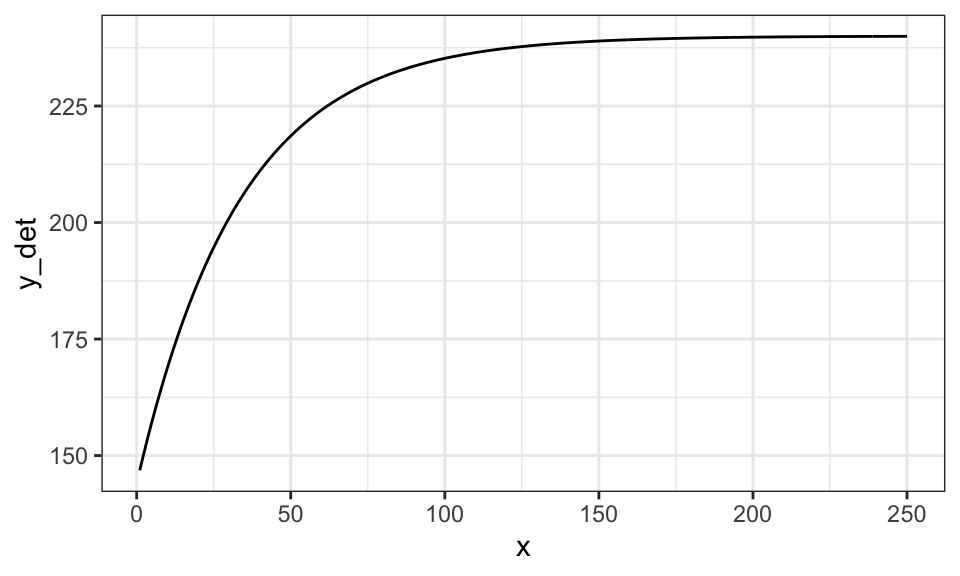
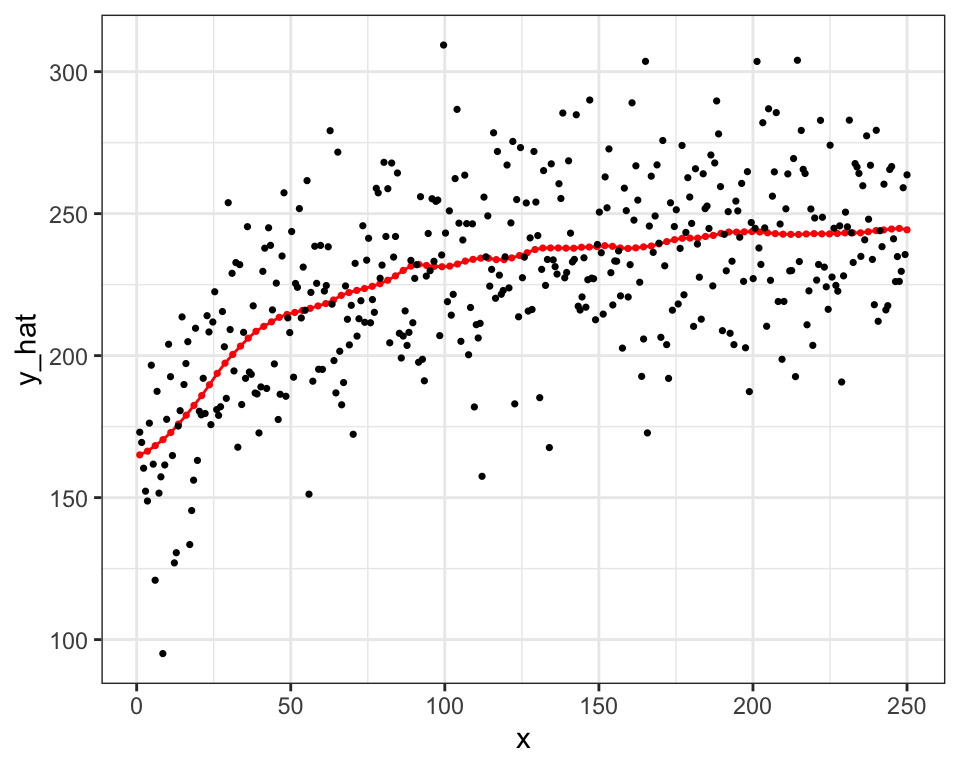
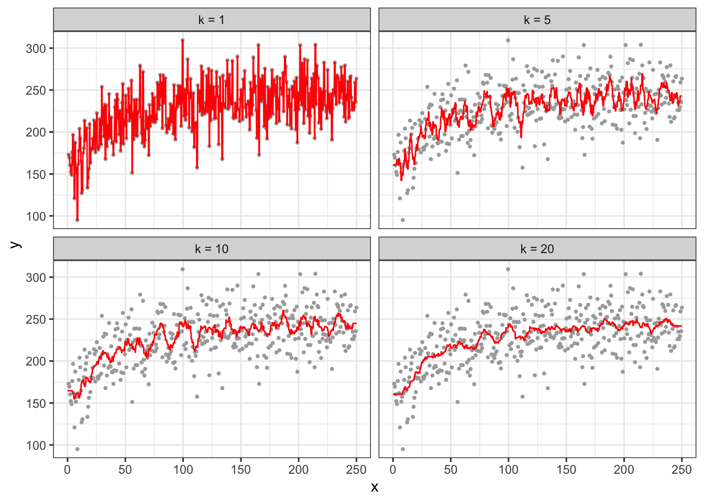

library(data.table)
library(tidyverse)
library(mgcv)
library(parallel)
library(patchwork)
library(caret)1 Non-linear function estimation
The purpose of this section is to introduce you to the idea of semi-parametric and non-parametric regression methods. The world of semi-parametric and non-parametric regression is vast. But, we only scratch the surface by just looking at smoothing splines and local regression methods in this chapter. Learning these methods also provide us with excellent opportunities to learn the phenomenon called over-fitting and also the importance of hyper-parameters. Understanding local regression in particular is essential in understanding generalized random forest covered in Chapter 17.
1.1 Flexible functional form estimation
Packages to load for replications
There is a clear limit to liner (in parameter) parametric models in flexibility to represent quantitative relationships between variables. For example, consider crop yield response to fertilizer. Typically, yield increases at the diminishing rate as fertilizer rate increases. However, at a high enough fertilizer rate, yield stops increasing (fertilizer is not a limiting factor at that point). This relationship is illustrated in the figure below.
set.seed(83944)
#=== generate data ===#
N <- 400 # number of observations
x <- seq(1, 250, length = N)
y_det <- 240 * (1 - 0.4 * exp(- 0.03 * x))
e <- 25 * rnorm(N) # error
data <- data.table(x = x, y = y_det + e, y_det = y_det)
#=== plot ===#
(
g_base <- ggplot(data) +
geom_line(aes(y = y_det, x = x)) +
theme_bw()
)
Let’s try to fit this data using linear parametric models with \(sqrt(x)\), \(log(x)\), and \(x + x^2\), where the dependent variable is y_det, which is \(E[y|x]\) (no error added).
#=== sqrt ===#
lm_sq <- lm(y_det ~ sqrt(x), data = data)
data[, y_hat_sqrt := lm_sq$fit]
#=== log ===#
lm_log <- lm(y_det ~ log(x), data = data)
data[, y_hat_log := lm_log$fit]
#=== quadratic ===#
lm_quad <- lm(y_det ~ x + x^2, data = data)
data[, y_hat_quad := lm_quad$fit]Code
plot_data <-
melt(data, id.var = "x") %>%
.[variable != "y", ] %>%
.[, fit_case := fcase(
variable == "y_det", "True response",
variable == "y_hat_sqrt", "sqrt",
variable == "y_hat_log", "log",
variable == "y_hat_quad", "quadratic"
)]
ggplot(plot_data) +
geom_line(aes(y = value, x = x, color = fit_case)) +
scale_color_discrete(name = "") +
theme_bw()
None of the specifications do quite well. Indeed, you cannot represent the relationship well using well-known popular functional forms. Let’s now look at methods that are flexible enough to capture the relationship. First, smoothing splines, and then K-nearest neighbor next.
1.2 Smoothing Splines (semi-parametric)
Detailed discussion of smoothing splines is out of the scope of this book. Only its basic ideas will be presented in this chapter. See Wood (2006) for a fuller treatment of this topic.
Consider a simple quantitative relationship of two variables \(y\) and \(x\): \(y = f(x)\).
\[ \begin{aligned} y = f(x) \end{aligned} \]
It is possible to characterize this function by using many functions in additive manner: \(b_1(x), \dots, b_K(x)\).
\[ \begin{aligned} y = \sum_{k=1}^K \beta_k b_k(x) \end{aligned} \]
where \(\beta_k\) is the coefficient on \(b_k(x)\).
Here are what \(b_1(x), \dots, b_K(x)\) may look like (1 intercept and 9 cubic spline functions).
Code
basis_data <-
gam(y_det ~ s(x, k = 10, bs = "cr"), data = data) %>%
predict(., type = "lpmatrix") %>%
data.table() %>%
.[, x := data[, x]] %>%
melt(id.var = "x")
ggplot(data = basis_data) +
geom_line(aes(y = value, x = x)) +
facet_grid(variable ~ .) +
theme_bw()
By assigning different values to \(b_1(x), \dots, b_K(x)\), their summation can represent different functional relationships.
Here is what \(\sum_{k=1}^K \beta_k b_k(x)\) looks like when \(\beta_1\) through \(\beta_{10}\) are all \(200\).
\[ y = \sum_{k=1}^{10} 200 b_k(x) \]
Code
data.table(
variable = unique(basis_data$variable),
coef = rep(200, 10)
) %>%
.[basis_data, on = "variable"] %>%
.[, sum(coef * value), by = x] %>%
ggplot(data = .) +
geom_line(aes(y = V1, x = x)) +
theme_bw()
Here is what \(\sum_{k=1}^K \beta_k b_k(x)\) looks like when \(\beta_1\) through \(\beta_4\) are all \(50\) and \(\beta_5\) through \(\beta_9\) are all \(200\).
\[ y = \sum_{k=1}^5 50 b_k(x) + \sum_{k=6}^{10} 200 b_k(x) \]
Code
data.table(
variable = unique(basis_data$variable),
coef = c(rep(50, 5), rep(200, 5))
) %>%
.[basis_data, on = "variable"] %>%
.[, sum(coef * value), by = x] %>%
ggplot(data = .) +
geom_line(aes(y = V1, x = x)) +
theme_bw()In practice, we fit the model to a dataset to find coefficient estimates that fit the data well. Here, we use the gam() function from the mgcv package. Note that, we use \(E[y|x]\) (y_det) as the dependent variable to demonstrate the ability of smoothing splines to imitate the true function.
gam stands for Generalized Additive Model. It is a much wider class of model than our examples in this section. See Wood (2006) for more details.
gam_fit <- gam(y_det ~ s(x, k = 10, bs = "cr"), data = data)s(x, k = 10, bs = "cr") in the regression formula tells gam() to use 10 knots, which results in an intercept and nine spline basis functions. bs = "cr" tells gam() to use cubic spline basis functions.
There are many other spline basis options offered by the mgcv package. Interested readers are referred to Wood (2006).
Here are the coefficient estimates:
gam_fit$coefficient(Intercept) s(x).1 s(x).2 s(x).3 s(x).4 s(x).5
227.449797 -1.487811 16.749494 28.308769 32.116284 34.173014
s(x).6 s(x).7 s(x).8 s(x).9
35.179359 34.540353 38.592136 21.874699 This translate into the following fitted curve.
Code
data.table(
variable = unique(basis_data$variable)[-1],
coef = gam_fit$coefficient[-1]
) %>%
.[basis_data, on = "variable"] %>%
.[, .(y_no_int = sum(coef * value)), by = x] %>%
.[, y_hat := gam_fit$coefficient[1] + y_no_int] %>%
ggplot(data = .) +
geom_line(aes(y = y_hat, x = x, color = "gam-fitted")) +
geom_line(data = data, aes(y = y_det, x = x, color = "True")) +
scale_color_manual(
name = "",
values = c("gam-fitted" = "red", "True" = "blue")
) +
ylab("y") +
xlab("x") +
theme_bw()As you can see, the trained model is almost perfect in representing the functional relationship of \(y\) and \(x\).
Now, when gam() fits a model to a dataset, it penalizes the wiggliness (how wavy the curve is) of the estimated function to safe-guard against fitting the model too well to the data. Specifically, it finds coefficients that minimizes the sum of the squared residuals (for regression) plus an additional term that captures how wavy the resulting function is.
Here is an example of wiggly (first) v.s. smooth (second) functions.
Code
gam_fit_wiggly <- gam(y ~ s(x, k = 40, bs = "cr", sp = 0), data = data)
plot(gam_fit_wiggly, se = FALSE)
Code
gam_fit_smooth <- gam(y ~ s(x, k = 5, bs = "cr"), data = data)
plot(gam_fit_smooth, se = FALSE)
\[ \begin{aligned} Min_{\hat{f}(x)} \sum_{i=1}^N(y_i - \hat{f}(x_i))^2 + \lambda \Omega(\hat{f}(x)) \end{aligned} \]
where \(\Omega(\hat{f}(x)) > 0\) is a function that captures how wavy the resulting function is. It takes a higher value when \(\hat{f}(x)\) is more wiggly. \(\lambda > 0\) is the penalization parameter. As \(\lambda\) gets larger, a greater penalty on the wiggliness of \(\hat{f}(x)\), thus resulting in a smoother curve.
You can specify \(\lambda\) by sp parameter in gam(). When sp is not specified by the user, gam() finds the optimal value of sp internally using cross-validation (cross-validation will be introduce formally in Chapter 3). For now, just consider it as a method to find parameters that make the trained model a good representation of the underlying conditional mean function (\(E[y|x]\)).
More specifically, it uses generalized cross-validation (GCV). A special type of cross-validation that can be done when the model is linear in parameter.
If you do not pick the value of sp well, the estimated curve will be very wiggly. Let’s see an example by setting the value of sp to 0, meaning no punishment for being very wiggly. We also set the number of splines to \(39\) so that \(\sum_{k=1}^K \beta_k b_k(x)\) is very flexible.
Code
#=== fit ===#
gam_fit_wiggly <- gam(y ~ s(x, k = 40, bs = "cr", sp = 0), data = data)
#=== assign the fitted values to a variable ===#
data[, y_hat := gam_fit_wiggly$fitted.values]
#=== plot ===#
ggplot(data = data) +
geom_line(aes(y = y_hat, x = x), color = "red") +
geom_point(aes(y = y, x = x), size = 0.7) +
theme_bw()
We call this phenomenon over-fitting (of the data by the model). An over-fitted model does well in predicting \(y\) when applied to the data the model used to train itself. However, it would do a terrible job in prediction on the data it has never seen clearly because it is not predicting \(E[y|x]\) well.
In mgcv::gam(), the hyper-parameters are the penalty parameter \(\lambda\) (specified by. sp), the number of knots (specified by k)\(^1\), the type of splines (specified by bs). Coefficient estimates (\(\alpha\), \(\beta_1, \dots, \beta_K\)) change when the value of sp is altered. Here is what happens when k \(= 3\) (less flexible than the k \(= 39\) case above).
\(^1\) or more precisely, how many knots and where to place them
#=== fit ===#
gam_fit_wiggly <- gam(y ~ s(x, k = 3, bs = "cr", sp = 0), data = data)
#=== assign the fitted values to a variable ===#
data[, y_hat := gam_fit_wiggly$fitted.values]
#=== plot ===#
ggplot(data = data) +
geom_line(aes(y = y_hat, x = x), color = "red") +
geom_point(aes(y = y, x = x), size = 0.7) +
theme_bw()
Hyper-parameters can significantly influence the outcome. Since the user gets to pick any numbers, it can potentially be used to twist the results in a way that favors the outcomes they want to have. Therefore, it is important to pick the values of hyper-parameters wisely. One way of achieving the goal is cross-validation, which is a data-driven way of finding the best value of hyper-parameters. We will discuss cross-validation in ?sec-cv in detail.
Here is the fitted curve when the optimal value of sp is picked by gam() automatically given k = 40 and bs = "cr" using cross-validation.
That is, we are not tuning k and bs here. gam() uses generalized cross-validation, which we do not cover in this book.
#=== fit ===#
gam_fit_cv <- gam(y ~ s(x, k = 40, bs = "cr"), data = data)
#=== assign the fitted values to a variable ===#
data[, y_hat := gam_fit_cv$fitted.values]
#=== plot ===#
ggplot(data = data) +
geom_line(aes(y = y_hat, x = x), color = "red") +
geom_point(aes(y = y, x = x), size = 0.7) +
theme_bw()
You can see that the tuning of sp is successful and has resulted in a much better fitted curve compared to the case where sp was forced to be 0. As you will see, hyper-parameter tuning will be critical for many of the machine learning methods we will look at later.
1.3 Local Regression
Local regression is a non-parametric method that predicts \(y\) at the target value of \(X\) (say \(x_0\)) using the observations that are “close” to it (called neighbors). One of such methods is Nadaraya-Watson (NW) estimator.
Prediction of \(y\) at a particular value of \(X\) by the NW estimator takes the following steps:
- Find the weights for all the observations based on the choice of Kernel function (\(K(\cdot)\)) and bandwidth value (\(h\))
- Calculate the weighted mean of \(y\)
Mathematically, it can be written as follows:
\[ \begin{aligned} \hat{f}(X = x_0) & = \sum_{i=1}^N W_i(x_0)\cdot Y_i \\ \mbox{where, } W_i(x_0) & = \frac{K(\frac{x_0 - X_i}{h})}{\sum_{i=1}^n K(\frac{x_0 - X_i}{h})} \end{aligned} \]
- \(K()\): Kernel function
- \(h\): bandwidth
Note that \(\sum_{i=1}^N W_i = 1\), and \(W_i(x_0)\) is considered a weight for observation \(i\). So, this estimator simply calculates the weighted average of observed values of the dependent variable.
Now, let’s have a closer look at the weight. There are many types of Kernel functions. Some of them include
- Uniform: \(K(u) = 1/2\cdot I{|u| < 1}\)
- Epanechnikov: \(K(u) = \frac{3}{4}(1-u^2)\cdot I{|u| < 1}\)
- Gaussian: \(K(u) = \frac{1}{\sqrt{2\pi}}\cdot e^{-\frac{1}{2}u^2}\) (density function of standard normal distribution)
\(I\{\cdot\}\) is an indicator function that takes 1 if the statement inside the curly brackets is true, and 0 otherwise.
Figure 1.1 presents graphical representations of these functions.
Code
u_seq <- seq(-3, 3, length = 1000)
uni_data <-
data.table(
u = u_seq,
d = 1/2
) %>%
.[, type := "Uniform"] %>%
.[abs(u) > 1, d := 0]
epanechnikov_data <-
data.table(
u = u_seq
) %>%
.[, d := 3 / 4 * (1-u^2)] %>%
.[, type := "Epanechnikov"] %>%
.[abs(u) > 1, d := 0]
gaussian_data <-
data.table(
u = u_seq
) %>%
.[, d := dnorm(u)] %>%
.[, type:= "Gaussian"]
all_data <-
rbind(uni_data, epanechnikov_data, gaussian_data) %>%
.[, type := factor(type, levels = c("Uniform", "Epanechnikov", "Gaussian"))]
ggplot(all_data) +
geom_line(aes(y = d, x = u), color = "blue") +
facet_grid(type ~ .) +
theme_bw()
Clearly, the choice of Kernel function affects the weights given to each observation. Bandwidth (\(h\)) determines how “local” the estimator is. The lower the value of \(h\) is, the more “local” the estimator is. Let’s see this using the uniform Kernel with bandwidth values of \(2\) and \(5\). We use the same data generated in Section 1.2. Suppose we are interested in estimating y at x = 100.
Figure 1.2 presents the the data points on the first row for \(h = 2\) (left) and \(h=5\) (right) and corresponding weights on the second row \(h = 2\) (left) and \(h=5\) (right).
As you can see, when \(h\) is higher, more data points will involve in estimating \(y\): 5 observations when \(h=2\) and 12 observations when \(h=5\).

Let’s write a code to predict y at several different values of x using data for illustration. We will use the Epanechnikov Kernel function with bandwidth value of \(20\). First, we work on prediction at x = 120.
x0 <- 120
h <- 20
lr_data <-
copy(data) %>%
#=== calculate u ===#
.[, u := (x - x0)/h] %>%
#=== K(u) ===#
.[, k_of_u := 3 / 4 * (1-u^2)] %>%
#=== turn k_of_u to 0 if abs(u) > 1 ===#
.[abs(u) >= 1, k_of_u := 0] %>%
#=== find the weight ===#
.[, weight := k_of_u / sum(k_of_u)]Here are some of the data points that have non-zero weights:
lr_data[weight != 0, .(x, y, k_of_u, weight)] %>% head() x y k_of_u weight
1: 100.2256 243.1649 0.01682189 0.0005248584
2: 100.8496 219.0103 0.06236832 0.0019459481
3: 101.4737 250.9886 0.10645429 0.0033214707
4: 102.0977 214.2540 0.14907983 0.0046514262
5: 102.7218 221.5801 0.19024493 0.0059358145
6: 103.3459 262.3424 0.22994958 0.0071746358We can then simply calculate the weighted mean.
(
y_hat_x120 <- lr_data[, sum(weight * y)]
)[1] 233.8969We can do this for many values of \(X\) and and connects the dots to find the “fitted curve.” First, let’s define a function that predicts y at a particular value of x using the Epanechnikov Kernel function for a given value of \(h\).
est_y_nw <- function(x0, data, h)
{
y_hat <-
copy(data) %>%
#=== calculate u ===#
.[, u := (x - x0)/h] %>%
#=== K(u) ===#
.[, k_of_u := 3 / 4 * (1-u^2)] %>%
#=== turn k_of_u to 0 if abs(u) > 1 ===#
.[abs(u) >= 1, k_of_u := 0] %>%
#=== find the weight ===#
.[, weight := k_of_u / sum(k_of_u)] %>%
.[, sum(weight * y)]
return_data <-
data.table(
x = x0,
y_hat = y_hat
)
return(return_data)
}Now, we do predictions at various values of x.
#=== sequence of values of x to do predictions at ===#
x_seq <- seq(data[, min(x)], data[, max(x)], length = 100)
#=== predict ===#
y_hat_lc <-
lapply(
x_seq,
function(x) est_y_nw(x, data, h)
) %>%
rbindlist() %>%
.[, type := "Local Constant"]Figure 1.3 visualizes the prediction results.
Code
ggplot() +
geom_line(
data = y_hat_lc,
aes(y = y_hat, x = x),
color = "red"
) +
geom_point(
data = y_hat_lc,
aes(y = y_hat, x = x),
color = "red",
size = 0.6
) +
geom_point(
data = data,
aes(y = y, x = x),
size = 0.6
) +
theme_bw()
One critical difference between local non-parametric regression and smoothing splines is that the former fits the data locally (unless \(h\) is very high) while smoothing splines fits the data globally (it uses all the data points to fit a single curve).
Another important distinction between the two approaches is that local non-parametric regression requires going through the entire process above whenever predicting \(y\) at a particular value of \(X\). This means that you need the entire train dataset every time. On the other hand, once smoothing splines regression is conducted, then you no longer need the train data any more because the fitted curve is characterized completely by the basis functions and their estimated coefficients.
Now, let’s see how the choice of \(h\) affects the fitted “curve.” We will try h = 2, 10, 20, 50
Code
get_y_hat_given_h <- function(data, x_seq, h_val)
{
return_data <-
lapply(
x_seq,
function(x) est_y_nw(x, data, h_val)
) %>%
rbindlist() %>%
.[, h := h_val]
return(return_data)
}
y_hat_h_various <-
lapply(
c(2, 10, 20, 50),
function(x) get_y_hat_given_h(data, x_seq, x)
) %>%
rbindlist()
ggplot(y_hat_h_various) +
geom_point(data = data, aes(y = y, x = x), size = 0.8) +
geom_line(aes(y = y_hat, x = x), color = "red") +
facet_wrap(h ~ .) +
theme_bw()As you can see in Figure 1.4, at \(h = 2\), the fitted curve is extremely wiggly and over-fitted. Increasing the value of \(h\) make the fitted curves smoother. Nobody uses NW estimator for any practical applications when the problem at hand is high-dimensional as it suffers from the curse of dimensionality. However, NW estimator is a great example to illustrate the importance of the choice of an arbitrary parameter (hyper-parameter). As discussed above, we will later look at cross-validation as a way to tune hyper-parameters.
1.3.1 Local linear regression
The NW estimator is a locally constant regression. You can see this from the fact that the NW estimator comes from solving the following minimization problem:
\[ \begin{aligned} \hat{f}(x = x_0) = argmin_{\alpha} \sum_{i=1}^N W_i(x_0)(Y_i - \alpha)^2 \end{aligned} \]
By modifying the objective function slightly, we will have local linear regression:
\[ \begin{aligned} \{\hat{\alpha}, \hat{\beta}\} = argmin_{\alpha,\beta} \sum_{i=1}^N W_i(x_0)(Y_i - \alpha - \beta (x_i - x_0))^2 \end{aligned} \]
Then the fitted value is given by \(\hat{f}(x = x_0) = \hat{\alpha}\). This is because the value of \(x\) is re-centered around the evaluation point. Alternatively, you can solve the following without re-centering,
\[ \begin{aligned} \{\hat{\alpha}, \hat{\beta}\} = argmin_{\alpha,\beta} \sum_{i=1}^N W_i(x_0)(Y_i - \alpha - \beta x_i)^2 \end{aligned} \]
, and then calculate \(\hat{f}(x = x_0) = \hat{\alpha} + \hat{\beta}x_0\). They will provide the same estimate of \(\hat{f}(x = x_0)\).
Let’s implement this as an illustration for \(x_0 = 150\) with the Epanechnikov kernel function with \(h=20\).
x0 <- 150
h <- 20
lr_data <-
copy(data) %>%
#=== calculate u ===#
.[, u := (x - x0)/h] %>%
#=== K(u) ===#
.[, k_of_u := 3 / 4 * (1-u^2)] %>%
#=== turn k_of_u to 0 if abs(u) > 1 ===#
.[abs(u) >= 1, k_of_u := 0] %>%
#=== find the weight ===#
.[, weight := k_of_u / sum(k_of_u)] %>%
.[, x_diff := x - x0]
#=== run linear regression with the weights ===#
ols_res <- lm(y ~ x_diff, data = lr_data, weights = weight)
#=== predict ===#
(
y_hat_x0 <- ols_res$coefficient["(Intercept)"]
)(Intercept)
238.5055 Alternatively,
#=== run linear regression with the weights no centering around x0 ===#
ols_res <- lm(y ~ x, data = lr_data, weights = weight)
#=== predict ===#
(
y_hat_x0 <- predict(ols_res, newdata = data.table(x = x0))
) 1
238.5055 Local linear regression is better than local constant regression if the underlying curve is significantly non-linear instead of a flat line. Local linear regression also does better near the boundary of the support of \(x\). Figure 1.5 presents predicted values by local constant and linear regressions. In this case, it is hard to see the difference between the two except at the edges of \(x\) support.
Code
est_y_ll <- function(x0, data, h){
lr_data <-
copy(data) %>%
#=== calculate u ===#
.[, u := (x - x0)/h] %>%
#=== K(u) ===#
.[, k_of_u := 3 / 4 * (1-u^2)] %>%
#=== turn k_of_u to 0 if abs(u) > 1 ===#
.[abs(u) >= 1, k_of_u := 0] %>%
#=== find the weight ===#
.[, weight := k_of_u / sum(k_of_u)] %>%
.[, x_diff := x - x0]
#=== run linear regression with the weights ===#
ols_res <- lm(y ~ x_diff, data = lr_data, weights = weight)
return_data <-
data.table(
x = x0,
y_hat = ols_res$coefficient["(Intercept)"]
)
return(return_data)
}
y_hat_ll <-
lapply(
x_seq,
function(x) est_y_ll(x, data, h)
) %>%
rbindlist() %>%
.[, type := "Local Linear"]
#=== combine with the local constant results ===#
data_all <- rbind(y_hat_lc, y_hat_ll)
#=== plot ===#
ggplot() +
geom_line(
data = data_all,
aes(y = y_hat, x = x, color = type)
) +
geom_point(
data = data_all,
aes(y = y_hat, x = x, color = type),
size = 0.6
) +
geom_point(
data = data,
aes(y = y, x = x),
size = 0.6
) +
scale_color_discrete(name = "") +
theme_bw() +
theme(legend.position = "bottom")You can make the function locally more flexible by including polynomials of \(x\). For example, this is a locally cubic regression.
\[ \begin{aligned} Min_{\alpha,\beta_1,\beta_2,\beta_3} \sum_{i=1}^N W_i(x_0)(Y_i - \alpha - \beta (x_i-x_0) - \beta_2 (x_i-x_0)^2 - \beta_3 (x_i-x_0)^3)^2 \end{aligned} \]
1.3.2 K-nearest neighbor
K-nearest neighbor (KNN) regression is a special case of local constant regression. The prediction of \(y\) conditional on \(x\) is simply the average of \(y\) observed for the K closest (in terms of distance to \(x\)) observations in the data. So, it is like the NW estimator with the uniform Kernel function. But, it is not a NW estimator because NW estimator does not fix the number of observations in the neighbor.
Predictions at points around a more densely populated area have larger numbers of observations in their neighbors.
The hyper-parameter for KNN regression is k (the number of neighbors). The choice of the value of \(k\) has a dramatic impacts on the fitted curve just like how the choice of \(h\) affects the fitted curve by the NW estimator.
Code
plot_data <-
data.table(
k = c(1, 5, 10, 20)
) %>%
rowwise() %>%
mutate(knn_fit = list(
knnreg(y ~ x, k = k, data = data)
)) %>%
mutate(eval_data = list(
data.table(x = seq(0, 250, length = 1000)) %>%
.[, y := predict(knn_fit, newdata = .)]
)) %>%
dplyr::select(k, eval_data) %>%
unnest() %>%
mutate(k_txt = paste0("k = ", k)) %>%
mutate(k_txt = factor(k_txt, levels = paste0("k = ", c(1, 5, 10, 20))))
ggplot() +
geom_point(data = data, aes(y = y, x = x), color = "darkgray", size = 0.7) +
geom_line(data = plot_data, aes(y = y, x = x), color = "red") +
facet_wrap(k_txt ~ ., nrow = 2) +
theme_bw()
As you can see, at k \(= 1\), the fitted curve fits perfectly with the observed data, and it is highly over-fitted. While increasing k to \(5\) alleviates the over-fitting problem, the fitted curve is still very much wiggly.
1.4 Efficiency: Parametric vs Non-parametric Methods
Semi-parametric and non-parametric approached are more flexible in representing relationships between the dependent and independent variables than linear-in-parameter models. So, why don’t we just use semi-parametric or non-parametric approaches instead for all the econometric tasks? One reason you might prefer linear-in-parameter models has something to do with efficiency.
1.4.1 Monte Carlo Simulation (parametric vs non-parametric)
Consider the following data generating process:
\[ \begin{aligned} y = log(x) + v \end{aligned} \]
Your objective is to understand the impact of treatment (increasing \(x = 1\) to \(x = 2\)). The true impact of the treatment is \(TE[x=1 \rightarrow x=2] = log(2) - log(1) = 0.6931472\).
Code
mc_run <- function(i)
{
print(i) # progress tracker
#=== set the number of observations (not really have to be inside the function..) ===#
N <- 1000
#=== generate the data ===#
x <- 3 * runif(N)
e <- 2 * rnorm(N)
y <- log(x) + e
data <-
data.table(
x = x,
y = y
)
eval_data <- data.table(x = c(1, 2))
#=== linear model with OLS ===#
lm_trained <- lm(y ~ log(x), data = data)
te_lm <- lm_trained$coefficient["log(x)"] * log(2)
#=== gam ===#
gam_trained <- gam(y ~ s(x, k = 5), data = data)
y_hat_gam <- predict(gam_trained, newdata = eval_data)
te_gam <- y_hat_gam[2] - y_hat_gam[1]
#=== KNN ===#
knn_trained <- knnreg(y ~ x, k = 10, data = data)
y_hat_knn <- predict(knn_trained, newdata = eval_data)
te_knn <- y_hat_knn[2] - y_hat_knn[1]
#=== combined the results ===#
return_data <-
data.table(
te = c(te_lm, te_gam, te_knn),
type = c("lm", "gam", "knn")
)
return(return_data)
}
set.seed(5293)
mc_results <-
mclapply(
1:500,
mc_run,
mc.cores = detectCores() * 3 / 4
) %>%
rbindlist()
# lapply(
# 1:100,
# mc_run
# )Figure 1.6 presents the density plots of treatment effect estimates by method. As you can see, the (correctly-specified) linear model performs better than the other methods. All the methods are unbiased, however they differ substantially in terms of efficiency. Note that there was no point in applying random forest at all as there is only a single explanatory variable and the none of the strong points of RF over linear model manifest in this simulation. Clearly, this simulation by no means is intended to claim that linear model is the best. It is merely showcasing a scenario where (correctly-specified) linear model performs far better than the non-parametric models. This is also a reminder that no method works the best all the time. There are many cases where parametric models perform better (contextual knowledge is critical so that your parametric model can represent the true data generating process well). There are of course many cases non-parametric modeling work better than parametric modeling.
Code
ggplot(data = mc_results) +
geom_density(aes(x = te, fill = type), alpha = 0.4) +
geom_vline(xintercept = log(2)) +
theme_bw()References
García-Portugués, E. 2022. Notes for Predictive Modeling. https://bookdown.org/egarpor/PM-UC3M/.
Wood, Simon N. 2006. Generalized Additive Models: An Introduction with r. chapman; hall/CRC.